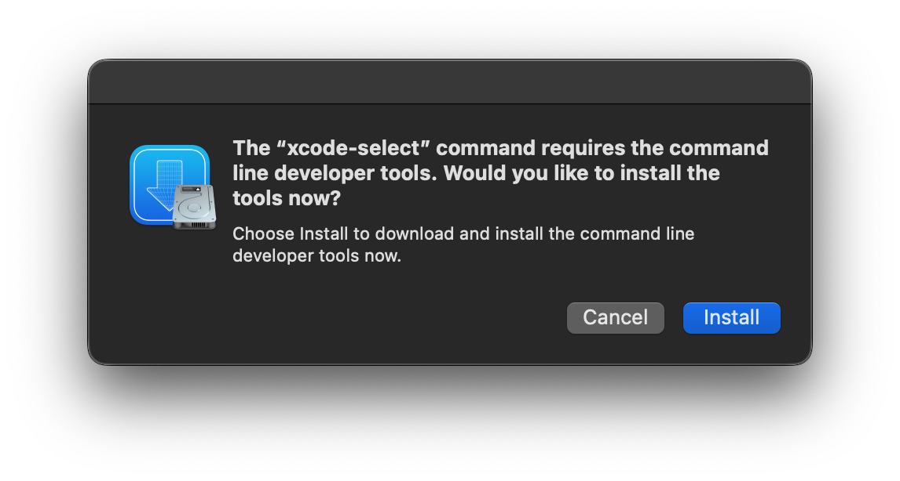

PlayCover
Run iOS apps and games on Apple Silicon Macs with mouse, keyboard and controller support.
GitHub
·
Discord
·
Website
Docs are in progress watch this space!
About The Project
Welcome to PlayCover! This software is all about allowing you to run iOS apps and games on Apple Silicon devices running macOS 12.0 or newer.
PlayCover works by putting applications through a wrapper which imitates an iPad. This allows the apps to run natively and perform very well.
PlayCover also allows you to map custom touch controls to keyboard, which is not possible in alternative sideloading methods such as Sideloadly.
These controls include all the essentials, from WASD, camera movement, left and right clicks, and individual keymapping, similar to a popular Android emulator’s keymapping system called Bluestacks.
This software was originally designed to run Genshin Impact on your Apple Silicon device, but it can now run a wide range of applications. Unfortunately, not all games are supported, and some may have bugs.
Contributing
If you have a suggestion that would make this better, please fork the repo and create a pull request. Don't forget to give the project a star! Thanks again!
- Fork the Project
- Create your Feature Branch (
git checkout -b feature/AmazingFeature) - Commit your Changes (
git commit -m 'Add some AmazingFeature') - Push to the Branch (
git push origin feature/AmazingFeature) - Open a Pull Request
Download & Install PlayCover
Prerequisites
At the moment, PlayCover can only run on Apple Silicon Macs. Devices with the following chips are supported:
- M1
- M1 Pro
- M1 Max
- M1 Ultra
- M2
If you have an Intel Mac, you can explore alternatives like Bootcamp or emulators.
Download
You can download stable releases here, or build from source by following the instructions below.

Installing
- Drag PlayCover into your Applications folder.
- Then double click to open and click
Openon the system prompt. - When you first run the app you may be met with a screen asking to install
Xcode Command Line Tools.-
Press
Installin the appOR
-
In terminal run the command
xcode-select --install
-
- Follow the onscreen instructions to install
Xcode Command Line Tools. 
NOTE: When you start the download for Xcode Command Line Tools it may first estimate the time remaining at several hours or days. This is normal, it will typically not take anywhere near that time (speed will vary based on your Internet connection). If you're curious why this happens, watch this video by Tom Scott.
Homebrew Cask
We host a Homebrew tap with the PlayCover cask. To install from it:
- Tap
PlayCover/playcoverwithbrew tap PlayCover/playcover; - Install PlayCover with
brew install --cask playcover-community.
To uninstall:
- Remove PlayCover using
brew uninstall --cask playcover-community; - Untap
PlayCover/playcoverwithbrew untap PlayCover/playcover.
Download & Install iOS .ipa files
.ipa files must be decrypted to install them with PlayCover. Quite often, the app you're looking for will already be decrypted.
Downloading
There are many sources online for decrypted .ipa files. Listed below are some recommended ones as they can vary in quality, speed, and recentness.
Suggested Sources:
-
Decrypted .ipa files can be found in #decrypted-ipas channel. Popular .ipa files like Genshin Impact will be pinned.
You can also request for .ipa files to be decrypted.(Currently unavailable)NOTE: The PlayCover Discord does not condone piracy and, as a result, will NOT decrypt paid apps
-
A web repository run by PlayCover developers containing already decrypted .ipa files from Discord
-
External Websites
There are several external websites including:
NOTE: As these sites are not run or moderated by PlayCover developers, we cannot verify the quality or safety of these downloads. Use at your own risk.
-
Decrypt Yourself
You can decrypt your own .ipa files including of paid apps you've already bought using a Jailbroken iOS device. There are many guides on how to do this online.
NOTE: This will require some technical knowledge, will likely invalidate your warranty, and may permanently damage your device.
Installing
Installing decrypted .ipa files is simple. Either drag and drop the .ipa file into the PlayCover window, or use the 'Add app' button to select the .ipa file in Finder.
If you run into issues installing, check that Xcode Command Line Tools are installed, see this article for more info.
Some apps like Genshin Impact will require further and more technical setup to get working. You can find those instructions here.
NOTE: Not all apps are supported. If you run into issues you can ask for help on the Discord.
Troubleshoot App Login Issues
You may encounter some issues when logging in to some apps and games like Genshin Impact. Follow these instructions to fix that. As always, if you run into issues, ask for help on Discord.
NOTE: The instructions below are Genshin Impact specific, but the same process will work for a wide range of apps.
-
Disable SIP
- First shut down your Mac completely so the screen is black and all other lights are off
- Press and hold the power button on your Mac until
Loading startup optionsappears - Select
Optionsand continue - If prompted, select the correct storage disk
- Log in with your administrator account
- When
Utilitiesappears in the menu bar, click on it and chooseTerminal - In the terminal window type
csrutil disableand type your password when prompted - Once
Successfully disabled System Integrity Protectionappears, restart your Mac
-
Modify
nvram boot-args- When you have SIP disabled, type the following:
Command (⌘)-Space, typeTerminalin the search box
- Type or copy the following command in the terminal window that appears
sudo nvram boot-args="amfi_get_out_of_my_way=0x1 ipc_control_port_options=0"
- If it appears that nothing has happened, this is correct.
- Restart your Mac
- When you have SIP disabled, type the following:
-
Login to Genshin
- Open Genshin Impact with PlayCover, and you should be greeted with a Login button
- Login to your account, then wait until the door appears and quit the game with
Command (⌘)-Q. DO NOT CLICK/ENTER THE DOOR.
-
Enable SIP
- Follow the steps in Step 1 to re-enter startup options
- When
Utilitiesappears in the menu bar, click on it and chooseTerminal - In the terminal window type
csrutil enableand type your password when prompted - Once
Successfully enabled System Integrity Protectionappears, restart your Mac
-
Open Genshin
- You're done! Enjoy playing Genshin!
Using & Making Keymaps
Many apps and games already have full keymaps available on the Discord. For more info see this article.
Enabling Keymapping
Once you've finished importing or creating your keymap, toggle it on or off using Option (⌥).
Custom Keymapping
You can open and close the Keymapping Editor at any time with:
- Menu Bar > Keymapping > Open/Close Keymapping Editor
OR
Command (⌘)-K.
Once in the Keymapping Editor you can add a new button by clicking on the screen. A ring menu will appear around the cursor with several different button types.
The following menu will describe each button type in clockwise order.
- Circle Button (◯)
- Adds a single key binding. Useful for pressing buttons on the UI.
- Directional Pad Button
- Adds directional joystick, where Up, Down, Left, and Right are bound to keys (by default WASD). Useful for movement joysticks.
- Directional Arrows Button
- Adds a mouse area for mouse control. Useful for camera control.
- RB Button
- Adds a single button bound to right mouse button (right click).
- LB Button
- Adds a single button bound to left mouse button (left click).
- Mouse Button
- Adds a single button bound to middle mouse button.
The key bound to each button can be changed by selecting the keymap and pressing the key you want to bind it to.
Keymap position can be changed by clicking and dragging a button to its desired position.
You can delete a selected button with:
-
Menu Bar > Keymapping > Delete selected element
OR
-
Command (⌘)-Delete
You can increase a selected button's size with:
-
Menu Bar > Keymapping > Upsize selected element
OR
-
Command (⌘)-Up Arrow
You can decrease a selected button's size with:
-
Menu Bar > Keymapping > Downsize selected element
OR
-
Command (⌘)-Down Arrow
Importing & Exporting Keymaps
Keymaps can be imported and exported to easily share them with other PlayCover users.
Importing Keymaps
- Download the
.playmapfile from #keymap-showcase - Open PlayCover and right click the app you wish to import the keymap to
- Click on
Import keymapping - Select the previously downloaded
.playmapfile - Quit and reopen the app
- This step is required for the newly imported keymapping to work
Exporting Keymaps
- Open PlayCover and right click the app you wish to export the keymap from
- Click on
Export keymapping - Select the folder you would like to export the
.playmapfile to - Press
Opento export the keymap to the folder selected
Common Issues
Occasionally, keymaps may become unresponsive. This may occur if you use Command (⌘)-Tab to quickly switch between apps before unlocking your mouse. If this occurs there are a couple of steps you can try.
- Press
Option (⌥)to release the mouse, and then pressOption (⌥)again to enable keymapping. You may have to do this a couple times to regain control - Use
Command (⌘)-Kto open the Keymapping Editor, and then close it again withCommand (⌘)-K - If the above doesn't work, restart the app
NOTE: When using shortcuts like Command (⌘)-Q to exit apps, the shortcut will not register with keymapping enabled. It may also result in unintended button presses if Q is mapped. Before quitting apps with shortcuts, you should therefore release your mouse and disable keymapping with Option (⌥)
Why building from source?
Building from source is very confusing for people with little to no knowledge about making apps, therefore, is not recommended for those people. If you just want access to new features before they come out on a stable version, you can check out nightly builds here. But if you want to add new features and try them out, continue following this guide.
Install Prerequisites
1. Install Xcode
Firstly, you will need Xcode for building PlayCover. Xcode is the editor that Apple created and it is the simplest way to build Swift apps. Keep in mind that it will take a considerable amount of disk space to install it.
2. Install Homebrew
Follow the instructions here to install Homebrew.
3. Install Carthage
Now, open Terminal and type brew install carthage.
4. Install SwiftLint
This step is pretty similar to the previous one, type brew install swiftlint into the Terminal after the previous installation is finished.
Code of Conduct
Our Pledge
We as members, contributors, and leaders pledge to make participation in our community a harassment-free experience for everyone, regardless of age, body size, visible or invisible disability, ethnicity, sex characteristics, gender identity and expression, level of experience, education, socio-economic status, nationality, personal appearance, race, religion, or sexual identity and orientation.
We pledge to act and interact in ways that contribute to an open, welcoming, diverse, inclusive, and healthy community.
Our Standards
Examples of behavior that contributes to a positive environment for our community include:
- Demonstrating empathy and kindness toward other people
- Being respectful of differing opinions, viewpoints, and experiences
- Giving and gracefully accepting constructive feedback
- Accepting responsibility and apologizing to those affected by our mistakes, and learning from the experience
- Focusing on what is best not just for us as individuals, but for the overall community
Examples of unacceptable behavior include:
- The use of sexualized language or imagery, and sexual attention or advances of any kind
- Trolling, insulting or derogatory comments, and personal or political attacks
- Public or private harassment
- Publishing others' private information, such as a physical or email address, without their explicit permission
- Other conduct which could reasonably be considered inappropriate in a professional setting
Enforcement Responsibilities
Community leaders are responsible for clarifying and enforcing our standards of acceptable behavior and will take appropriate and fair corrective action in response to any behavior that they deem inappropriate, threatening, offensive, or harmful.
Community leaders have the right and responsibility to remove, edit, or reject comments, commits, code, wiki edits, issues, and other contributions that are not aligned to this Code of Conduct, and will communicate reasons for moderation decisions when appropriate.
Scope
This Code of Conduct applies within all community spaces, and also applies when an individual is officially representing the community in public spaces. Examples of representing our community include using an official e-mail address, posting via an official social media account, or acting as an appointed representative at an online or offline event.
Enforcement
Instances of abusive, harassing, or otherwise unacceptable behavior may be reported to the community leaders responsible for enforcement at https://discord.gg/rMv5qxGTGC. All complaints will be reviewed and investigated promptly and fairly.
All community leaders are obligated to respect the privacy and security of the reporter of any incident.
Enforcement Guidelines
Community leaders will follow these Community Impact Guidelines in determining the consequences for any action they deem in violation of this Code of Conduct:
1. Correction
Community Impact: Use of inappropriate language or other behavior deemed unprofessional or unwelcome in the community.
Consequence: A private, written warning from community leaders, providing clarity around the nature of the violation and an explanation of why the behavior was inappropriate. A public apology may be requested.
2. Warning
Community Impact: A violation through a single incident or series of actions.
Consequence: A warning with consequences for continued behavior. No interaction with the people involved, including unsolicited interaction with those enforcing the Code of Conduct, for a specified period of time. This includes avoiding interactions in community spaces as well as external channels like social media. Violating these terms may lead to a temporary or permanent ban.
3. Temporary Ban
Community Impact: A serious violation of community standards, including sustained inappropriate behavior.
Consequence: A temporary ban from any sort of interaction or public communication with the community for a specified period of time. No public or private interaction with the people involved, including unsolicited interaction with those enforcing the Code of Conduct, is allowed during this period. Violating these terms may lead to a permanent ban.
4. Permanent Ban
Community Impact: Demonstrating a pattern of violation of community standards, including sustained inappropriate behavior, harassment of an individual, or aggression toward or disparagement of classes of individuals.
Consequence: A permanent ban from any sort of public interaction within the community.
Attribution
This Code of Conduct is adapted from the Contributor Covenant, version 2.0, available at https://www.contributor-covenant.org/version/2/0/code_of_conduct.html.
Community Impact Guidelines were inspired by Mozilla's code of conduct enforcement ladder.
For answers to common questions about this code of conduct, see the FAQ at https://www.contributor-covenant.org/faq. Translations are available at https://www.contributor-covenant.org/translations.
Contributors
PlayCover
- lixin9311
- Candygoblen123
- Wind-Explorer
- JoseMoreville
- IsaacMarovitz
- iVoider
- ohaiibuzzle
- Depal1
- ZhichGaming
- zanderp25
- wenqigl
- cryptoAlgorithm
- roeegh
- Animenosekai
PlayTools
- lixin9311
- JoseMoreville
Website
- roeegh
- EazyFTW
- lixin9311
- JoseMoreville
- Candygoblen123
PlayBook
- Depal1
- IsaacMarovitz
- ZhichGaming